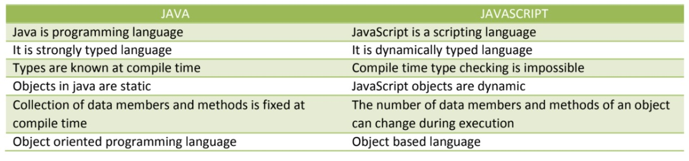

JavaScript, which was developed by Netscape, was originally named Mocha but soon was renamed LiveScript.
In late 1995 LiveScript became a joint venture of Netscape and Sun Microsystems, and its name again was changed, this time to JavaScript.
A language standard for JavaScript was developed in the late 1990s by the European Computer
Manufacturers Association (ECMA) as ECMA-262.
The official name of the standard language is ECMAScript.
JavaScript can be divided into three parts: the core, client side, and serverside.
The core is the heart of the language, including its operators, expressions, statements, and subprograms.
Client-side JavaScript is a collection of objects that support the control of a browser and interactions with users.
Server-side JavaScript is a collection of objects that make the language useful on a Web server.
JAVASCRIPT OBJECTS
In JavaScript, objects are collections of properties, which correspond to the members of classes in Java and C++.
Each property is either a data property or a function or method property.
Data properties appear in two categories: primitive values and references to other objects.
JavaScript uses non-object types for some of its simplest types; these non-object types are called
primitives.
Primitives are used because they often can be implemented directly in hardware, resulting in faster operations on their values.
All objects in a JavaScript program are indirectly accessed through variables.
